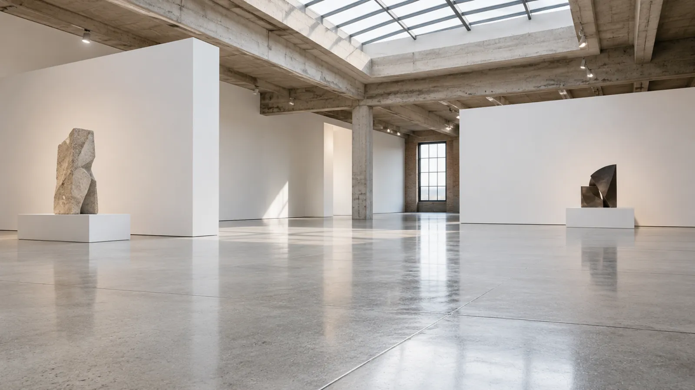
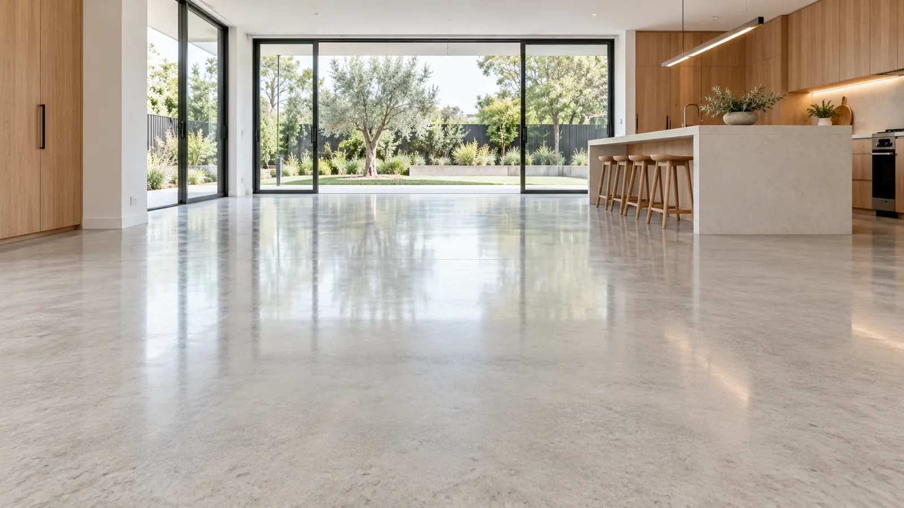
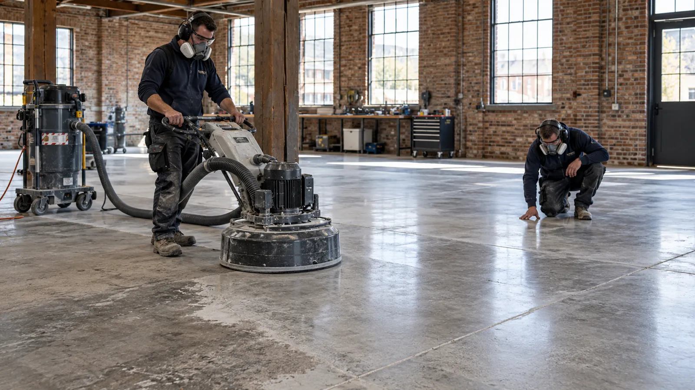
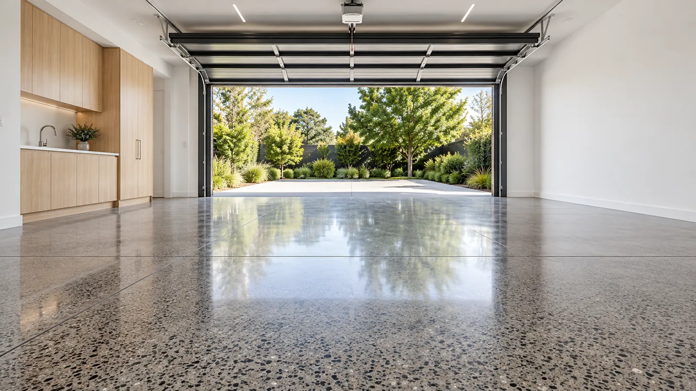
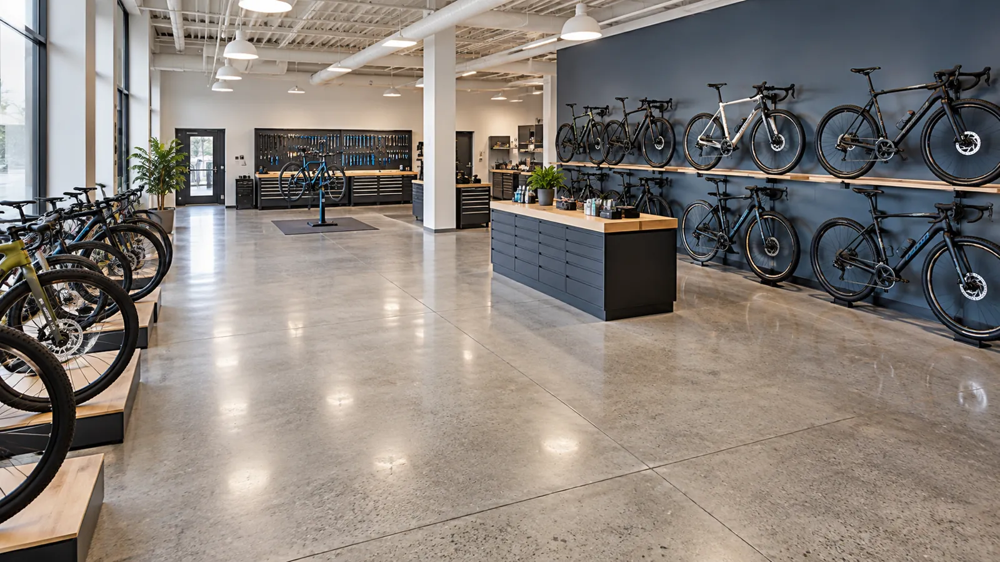

01 / APEX CONCRETE POLISHING
Mechanical polishing
A succession of diamond-grinding and polishing stages refines the concrete itself. Explore this finish for homes, showrooms and open interiors where the slab is a visible design feature.
Homes · Showrooms · Open-plan interiors
Enquire about this service ↗
02 / APEX CONCRETE POLISHING
Grind & seal
Grinding reveals the surface before a sealer is applied. Different coating systems offer different appearances and maintenance needs; discuss the right combination for your space and budget.
Renovations · Residential · Light commercial
Enquire about this service ↗
03 / APEX CONCRETE POLISHING
Epoxy floor preparation
Preparation removes unsuitable surface material and creates a profile for an epoxy coating. Assessment, grinding and cleaning help establish a sound base before the coating stage.
Coating preparation · Existing slabs
Enquire about this service ↗
04 / APEX CONCRETE POLISHING
Garage floor polishing
Give a practical space a considered finish. Garage flooring should be selected around vehicle use, spills, cleaning and the condition of the existing concrete.
Garages · Workshops
Enquire about this service ↗
05 / APEX CONCRETE POLISHING
Commercial floors
Retail, offices, warehouses and hospitality spaces have different demands. Balance appearance with traffic, maintenance and the way your premises operate when choosing a concrete flooring system.
Retail · Offices · Warehouses · Hospitality
Enquire about this service ↗06 / APEX CONCRETE POLISHING
Outdoor concrete sealing
Discuss sealing for driveways, paths and patios. Product selection depends on exposure, drainage, surface condition and the traction required for the area.
Driveways · Pathways · Patios
Enquire about this service ↗